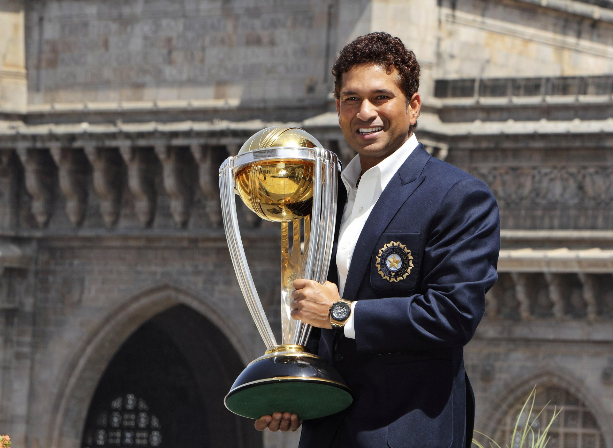
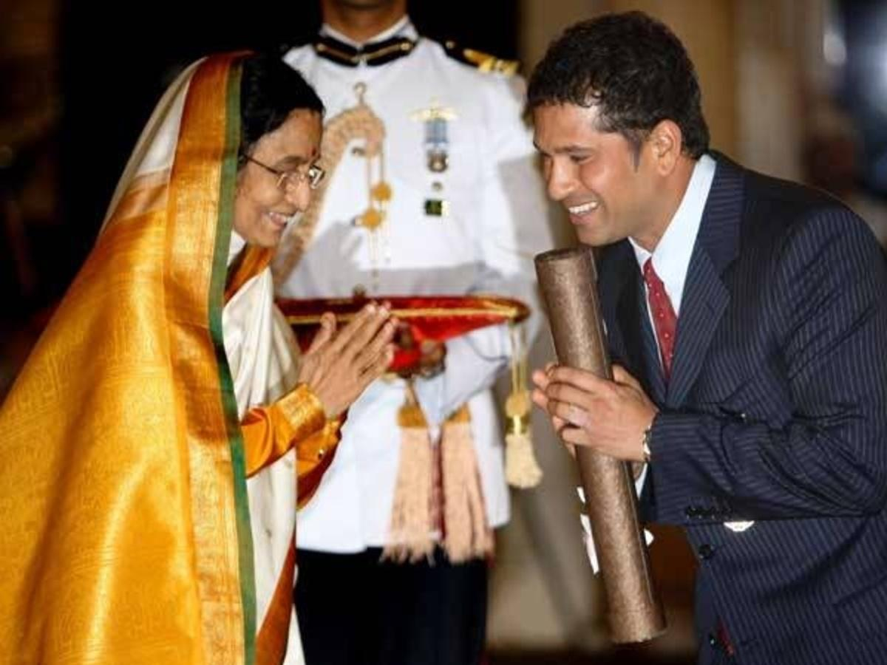
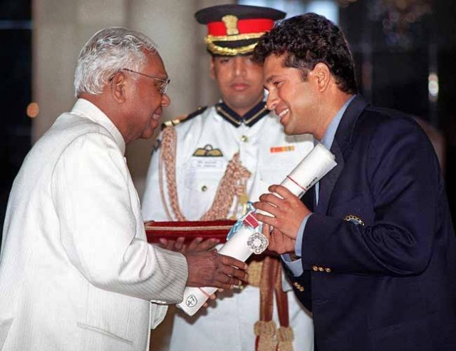

Achievements




Sachin Tendulkar is one of the most popular cricketers not just in India but across the globe. achin has been lauded with Arjuna Award in 1994, Khel Ratna in 1997, Padma Shri in 1998 and Padma Vibhushan (2008) honours. He is the only sportsperson to be conferred the Bharat Ratna in 2013. Click here more
The Sachin Tendulkar Foundation was created to give a platform to bring together people, institutions and resources who are passionate about bringing a social change. The foundation will help us give equal opportunity to children and create a better world for our children.
24 year-long marvellous cricket career came to an end on 16 November, 2013 when he announced his retirement. In December 2012, he played his last ODI match and in 2013, twenty20 match. Let us tell you that his 200th test match against West Indies on 16th November 2013 was his adieu to the cricketing world as a player. No doubt Sachin Tendulkar is one of the greatest batsmen in the world. His list of records is almost unending. At the age of 16, he became the youngest player and till then he continued breaking records and setting new ones. He has inspired millions. He had made his position in almost all the hearts of a person in the world. It’s like when we talk about cricket the first name that comes to our mind and tongue is Sachin only.